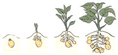
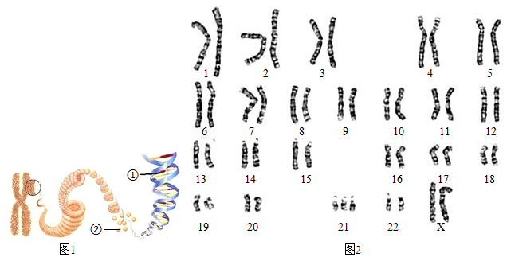
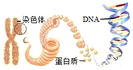
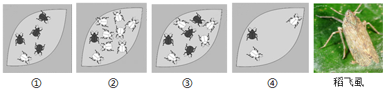

2017年北京市海淀区中考生物试题 原卷解析
北京市海淀区2017年中考生物真题试题
一、选择题
1. 生活中，人们很容易判断一个物体是否为生物，但是要给生物下定义却很困难．下面是一位同学对生物特征的总结，正确的是（ ）
A. 都能进行光合作用B. 都能自由运动
C. 都能形成条件反射D. 都能繁殖后代
【答案】D
【解析】
【分析】生物的共同特征有：①生物的生活需要营养；②生物能进行呼吸；③生物能排出身体内产生的废物；④生物能对外界刺激作出反应；⑤生物能生长和繁殖；⑥生物都有遗传和变异的特性；⑦除病毒以外，生物都是由细胞构成的。
【详解】动物和微生物不能进行光合作用，植物能进行光合作用，A错误；动物一般能运动，植物一般不能运动，B错误；高等的动物一般能形成条件反射，而植物不能，C错误；动物、植物、微生物都能生长和繁殖，D正确。
【点睛】解答此类题目的关键是理解生物的特征。
2. 下列诗句描绘的现象中，不属于生命现象的是（ ）
A. 两只黄鹂鸣翠柳，一行白鹭上青天
B. 几处早莺争暖树，谁家新燕啄春泥
C. 黄河之水天上来，奔流到海不复回
D. 小荷才露尖尖角，早有蜻蜓立上头
【答案】C
【解析】
【分析】生物的共同特征有：①生物的生活需要营养；②生物能进行呼吸；③生物能排出身体内产生的废物；④生物能对外界刺激作出反应；⑤生物能生长和繁殖；⑥生物都有遗传和变异的特性；⑦除病毒以外，生物都是由细胞构成的。
【详解】A、黄鹂、白鹭属于动物，柳属于植物，诗中的现象属于生命现象，A不符合题意。
B、早莺、新燕属于动物，树属于植物，诗中的现象属于生命现象，B不符合题意。
C、诗中没有生物，诗中的现象不属于生命现象，C符合题意。
D、小荷属于植物，蜻蜓属于动物，诗中的现象属于生命现象，D不符合题意。
故选C
【点睛】解答此类题目的关键是理解生物的特征。
3. 生物既能适应环境又能影响环境，下列哪项能够说明生物适应环境 （ ）
A. 蚁穴溃堤B. 青蛙冬眠C. 蚯蚓松土D. 大树底下好乘凉
【答案】B
【解析】
【分析】生物必须适应环境才能生存，如在沙漠上植树必须种植耐旱树种沙棘才能容易成活，若种植需水较多的水莲在很难成活，生物也能影响环境如蚯蚓改良土壤，千里之堤毁于蚁穴，植物的蒸腾作用可以增加空气湿度等。
【详解】A.蚂蚁是群居动物，蚂蚁善于打洞，洞多了造成堤坝的土质松动，堤坝就崩溃了，体现了生物蚂蚁对环境堤坝的影响，不符合题意。
B.青蛙是变温动物，体温随着环境温度的变化而变化，为了避免温度过低冻伤甚至冻死，变温动物青蛙有冬眠的特性，主要是受温度影响的，体现了生物对寒冷环境的适应，符合题意。
C.蚯蚓在土壤中穴居钻洞能使土壤疏松，蚯蚓排出物还能增加土壤肥力，表明生物能影响环境，不符合题意。
D.大树底下好乘凉，是大树的蒸腾作用可以增加大气的湿度，降低温度，同时大树遮阴，也能降低温度，大树还能进行光合作用释放氧气，使树下氧气较多，因此大树下空气凉爽、湿润、清新好乘凉，体现了生物对环境的影响，不符合题意。
故选B。
4. 用显微镜观察细胞的结构时，观察的材料必须是薄而透明的，原因是这样的材料（ ）
A. 便于放置在显微镜上B. 不易污染物镜
C. 易于被染色D. 能让光线透过
【答案】D
【解析】
【分析】用显微镜观察时观察材料必须是薄而透明，厚薄均匀的。
【详解】显微镜成像是利用光学原理，必须使可见光线穿过被观察的物体，如果不透光就不能在视野中成像。所以，用显微镜进行观察的时候，被观察的材料必须是薄而透明，这是因为光线能透过材料。
【点睛】解此题关键是理解光线依次要通过反光镜、光圈、通光孔、玻片标本、物镜、镜筒、目镜，才能进入到人的眼睛。
5. 下列表示人体的结构层次，正确的是（ ）
A. 组织→细胞→器官→系统→人体
B. 细胞→器官→组织→系统→人体
C. 细胞→组织→器官→系统→人体
D. 器官→组织→细胞→系统→人体
【答案】C
【解析】
【分析】人体的结构层次由小到大依次是：细胞→组织→器官→系统→人体。
【详解】细胞是人体结构和功能的基本单位，人体是由细胞分化形成组织，人体的主要组织有上皮组织、肌肉组织、结缔组织、神经组织等，再由这几种不同的组织按照一定的次序结合在一起形成具有一定功能的器官，再由能够共同完成一种或几种生理功能的多个器官按照一定的次序组合在一起形成系统，人体有消化系统、呼吸系统、循环系统、泌尿系统、运动系统、生殖系统、内分泌系统和神经系统。最后由八大系统构成完整的人体。因此人体的结构层次由小到大依次是细胞→组织→器官→系统→人体。故选C。
【点睛】人体的结构层次在中考中经常出现，题型多变。要重点掌握。
6. “海带炖排骨”和“紫菜蛋花汤”是人们喜爱的佳肴，海带和紫菜都属于（ ）
A. 藻类植物B. 苔藓植物C. 蕨类植物D. 种子植物
【答案】A
【解析】
【分析】藻类植物大都生活在水中，结构简单，有单细胞的，也有的多细胞，但都没有根、茎、叶的分化，用孢子繁殖后代。
【详解】海带、紫菜结构简单，没有根、茎、叶的分化，都属于藻类植物，A符合题意。
【点睛】解答此类题目的关键是熟知常见的藻类植物。
7. 国槐和侧柏是北京市的市树，月季和菊花是北京市的市花，其中属于裸子植物的是（ ）
A. 国槐B. 侧柏
C. 月季D. 菊花
【答案】B
【解析】
【分析】被子植物和裸子植物都能产生种子并靠种子繁殖后代，被称为种子植物。两者的主要区别是种子外面是否有果皮包被。

【详解】ACD、国槐、月季和菊花的种子外面有果皮包被着，属于被子植物，ACD错误。
B、侧柏的种子外面无果皮包被着，属于裸子植物，B正确。
故选B。
【点睛】本题考查的知识点是被子植物和裸子植物的比较。理解掌握裸子植物和被子植物的主要区别是种子外面有无果皮包被着是解题关键。
8. 一朵花中最主要的结构是（ ）

A. ①②B. ③⑥
C. ⑤⑥D. ④⑤
【答案】C
【解析】
【分析】图中①是花柄，②是花托，③是萼片，④是花瓣，⑤是雄蕊，⑥是雌蕊。
【详解】一朵花中只有雄蕊和雌蕊与结出果实种子有直接关系，因此花的主要结构是⑤雄蕊和⑥雌蕊，雄蕊由花药和花丝组成，雌蕊由柱头、花柱、子房组成，雄蕊和雌蕊合称花蕊。
【点睛】解答此类题目的关键是理解掌握花的结构。
9. 下列各项能正确表示光合作用的是（ ）
A. 水+二氧化碳 有机物+氧气
有机物+氧气
B. 水+二氧化碳 有机物+二氧化碳
有机物+二氧化碳
C. 水+氧气 有机物+氧气
有机物+氧气
D. 有机物+二氧化碳水+氧气
【答案】A
【解析】
【分析】绿色植物通过叶绿体利用光能把二氧化碳和水合成有机物，并储存能量，同时释放出氧气的过程叫光合作用。
【详解】光合作用反应式可表示为：二氧化碳+水 有机物（贮存能量）+氧气。光合作用的原料是二氧化碳和水；场所是叶绿体；条件是光；产物是：淀粉和氧。
有机物（贮存能量）+氧气。光合作用的原料是二氧化碳和水；场所是叶绿体；条件是光；产物是：淀粉和氧。
【点睛】解此题的关键是理解掌握光合作用的概念。
10. 正常情况下，人体胚胎发育的场所是（ ）

A. ①B. ②
C. ③D. ④
【答案】C
【解析】
【分析】女性的生殖系统包括卵巢，输卵管，子宫，阴道等，各有不同的用途。图示中①卵巢、②输卵管、③子宫、④阴道。
【详解】①卵巢有产生卵细胞，分泌雌性激素的作用。A错误；②输卵管输送卵子及受精完成与胚胎初期发育的地方，B错误；③人体胚胎发育的主要场所是子宫，C正确；④阴道是精子进入和胎儿产出的通道，D错误。
【点睛】解答此题的关键是熟练掌握人的生殖发育过程。
11. 下列营养物质中，能为人体生命活动提供能量的是（ ）
①糖类 ②脂肪 ③蛋白质 ④水 ⑤无机盐
A. ①③⑤B. ①②④C. ①②③D. ①②⑤
【答案】C
【解析】
【分析】食物中含有六大类营养物质：蛋白质、糖类、脂肪、维生素、水和无机盐，每一类营养物质都是人体所必需的。
【详解】食物所含的六类营养物质中，能为人体提供能量的是糖类、脂肪和蛋白质，同时这三类物质也是组织细胞的组成成分。其中糖类是最主要的供能物质，脂肪也是重要的供能物质，但是人体内的大部分脂肪作为备用能源贮存在皮下等处，属于贮备能源物质。蛋白质也能为生命活动提供一部分能量，但蛋白质主要是构成组织细胞的基本物质，是人体生长发育、组织修复和更新的重要原料。水、无机盐和维生素不能为人体提供能量，但对维持正常生命活动却有重要的意义。维生素既不能为人体提供能量，也不参与人体组织的构成，但它对人体的生命活动具有重要的调节作用。水和无机盐属于无机物，其中水既是人体重要的构成成分，也是人体各项生命活动进行的载体，营养物质和废物都必须溶解在水中才能被运输。C正确。
【点睛】了解各类营养物质的作用是解题的关键。
12. 从平衡膳食的角度来看，下列午餐食谱所选食物搭配最为合理的是（ ）
A. 炸鸡腿、薯条、奶油饼干、可乐
B. 面包、香肠、巧克力、牛奶
C. 馒头、红烧鱼、摊鸡蛋、玉米粥
D. 米饭、酱牛肉、炒豆角、鸡蛋西红柿汤
【答案】D
【解析】
【分析】为了满足人体每天对能量和营养物质的需要，人们的营养必须合理而全面。
【详解】我们所吃的食物能为人体提供糖类、脂肪、蛋白质、水、无机盐、维生素等，所以我们应均衡的摄取这些营养物质，本着粗细搭配、荤素搭配的原则，只有D项营养物质比较全面，ABC选项都不全面合理。故选D
【点睛】本题主要考查的是合理营养的含义，解题的关键是明确食谱中的营养要均衡、荤素搭配合理。
13. 人体进行呼吸时会呼出大量的二氧化碳，这些二氧化碳产生于（ ）
A. 细胞B. 血液
C. 肺泡D. 气管和支气管
【答案】A
【解析】
【分析】呼吸全过程包括四个方面：肺的通气、发生在肺泡内的气体交换、气体在血液中的运输、血液与组织细胞间的气体交换。呼吸的意义是有效地提供机体代谢所需的氧气，排出体内产生的二氧化碳。
【详解】人体进行生命活动所需要的能量是由细胞内的有机物在氧气的参与下被分解成二氧化碳时释放出来的，即有机物+氧气→二氧化碳+水+能量；产生的二氧化碳又通过呼吸排出，如图所示：

因此人体呼出的二氧化碳，其最终来源是组织细胞。
【点睛】人体排出的二氧化碳来源于组织细胞利用氧气分解有机物而产生的。
14. 中医常通过“切脉”来推知体内各器官的健康状况；病人在医院打吊瓶时，针头插入的是手臂上的一条“青筋”．这里所说的“切脉”的“脉”和“青筋”分别是指（ ）
A. 动脉和神经B. 静脉和动脉
C. 动脉和静脉D. 动脉和毛细血管
【答案】C
【解析】
【分析】脉搏即动脉搏动，随着心脏有节律性的收缩和舒张，动脉管壁相应的出现扩张和回缩，在体表浅动脉上可触到搏动。
【详解】脉搏即动脉的搏动。心脏收缩时，由于输出血液冲击引起的动脉跳动。正常人的脉搏和心率一致，医生可以根据脉搏诊断疾病。切脉一般取近手腕部的桡动脉，分寸、关、尺三部按察，掌后高骨处定为关，关前为寸，关后为尺；切脉必须在病人安静后才进行，病人手臂平放，手掌向上，医生用食、中、无名指的指尖分别平按在寸、关、尺三个部位，用力则由轻到重，用浮取、中取、沉取三种手法，体会脉象的情况，来诊断病情。人体内的血管有动脉血管、静脉血管、毛细血管三种类型。其中动脉血管管壁厚，弹性最大，管腔较小，血流速度快，其功能为将血液从心脏输送到全身各处去；静脉血管管壁较薄，弹性较小，管腔大，血流速度慢，其功能为将血液从全身各处输送到心脏去；毛细血管管壁最薄，只有一层上皮细胞构成，管腔最小，只允许红细胞呈单行通过，血流速度极慢，数量最多，其功能为物质交换的场所。动脉一般埋藏在身体较深的部位，不易从体表中看到，静脉有的埋藏较深，有的埋藏较浅，在体表容易看到，呈“青色”，俗称“青筋”。因此“切脉”的“脉”和“青筋”分别是指动脉和静脉。
【点睛】解答此类题目的关键是理解脉搏的概念以及知道血管的分布特点。
15. 某人因车祸急需输血，他的血型是AB型，原则上应该给他输（ ）
A. A型血B. B型血
C. AB型血D. O型血
【答案】C
【解析】
【分析】输血以输同型血为原则。例如：正常情况下A型人输A型血，B型血的人输B型血。
【详解】由分析可知，输血以输同型血为原则。但在紧急情况下，AB血型的人可以接受任何血型，O型血可以输给任何血型的人。如果异血型者之间输血输得太快太多，输进来的凝集素来不及稀释，也可能引起凝集反应。因此，输血时应该以输入同型血为原则。异血型者之间输血，只有在紧急情况下，不得已才采用，某人急需输血，其血型为AB型，因此首先考虑的应该是输同型血，即AB型的血。
【点睛】虽然AB血型的人可以接受任何血型，O型血可以输给任何血型的人，但首选的原则是输同型血。
16. 人体形成尿液的器官是（ ）
A.  B.
B.  C.
C.  D.
D. 
【答案】B
【解析】
【分析】泌尿系统的组成及各部分的功能：

【详解】A、心脏是血液循环的动力器官，属于循环系统，A错误。
B、泌尿系统主要是由肾脏、输尿管、膀胱和尿道组成的。其中人体形成尿液的器官是肾脏，肾脏是形成尿液的场所，B正确。
C、肝脏分泌胆汁，胆汁中不含消化酶，但其中的胆盐可以乳化脂肪，将大的脂肪乳化成脂肪微粒，加大了脂肪与消化液的接触面积，促进脂肪的消化，C错误。
D、肺是气体交换的场所，D错误。
故选B。
【点睛】理解泌尿系统的组成和各部分的功能是关键。
17. 看书一个小时后，向远处眺望一会儿，可以预防近视眼，主要原因是（ ）
A. 使调节瞳孔中的神经得到休息
B. 使视神经得到休息
C 使视觉中枢得到休息
使视觉中枢得到休息
D. 使调节晶状体的肌肉得到放松
【答案】D
【解析】
【分析】正常人看远近不同的物体时，通过晶状体的调节作用，都能使远近不同的物体反射来的光线汇聚在视网膜上，形成清晰的物像。视近物时，晶状体的曲度大；视远物时，晶状体的曲度小。
【详解】看书一小时后，向远处眺望一会儿，可以使调节晶状体的肌肉（睫状体）放松，使晶状体的曲度变小，有利于促进眼的血液循环，加强眼的营养，保护视力、预防近视。可见D符合题意。
【点睛】解答此类题目的关键是理解视远物时，调节晶状体的肌肉（睫状体）放松，晶状体的曲度小。
18. 下列反射活动中，属于人类特有的是（ ）
A. 看见食物分泌唾液B. 吃食物分泌唾液
C. 拍打叮咬自己的蚊虫D. 谈虎色变
【答案】D
【解析】
【分析】（1）人和动物都能对具体刺激建立反射如简单反射和具体条件刺激的复杂反射，如常打针的小孩看到穿白衣服的护士就会哭，狗看见拿木棍的人会逃跑，表明人和动物都能对具体条件引起的刺激建立条件反射。
（2）人与动物最大的区别在于人类有特有的语言中枢，因此人类特有的反射是通过大脑皮层的语言中枢对抽象的语言文字、符号、特征建立的条件反射。
【详解】看见食物分泌唾液、吃食物分泌唾液、拍打叮咬自己的蚊虫，都是具体条件刺激引起的反射，人和动物共有；谈虎色变是通过大脑皮层的语言中枢形成的人类特有的反射。
【点睛】解答此类题目的关键是理解人类特有的条件反射的特点有语言中枢的参与的反射。
19. 下列叙述中，不属于大熊猫的特征是（ ）
A. 细胞具有细胞壁B. 是生态系统中的消费者
C. 是多细胞生物D. 有能分解食物的消化系统
【答案】A
【解析】
【分析】大熊猫属于哺乳动物，哺乳动物的特征，即：胎生哺乳，体表被毛覆盖，体腔内有膈，牙齿分为门齿、臼齿、犬齿，心脏四腔，用肺呼吸，体温恒定等。
【详解】动物和植物细胞都有细胞膜、细胞质、细胞核和线粒体；动物细胞没有而植物细胞具有的结构是细胞壁、叶绿体和液泡，大熊猫为哺乳动物，细胞中没有细胞壁，A符合题意；消费者动物在维持生态平衡有着重要作用，促进生态系统中的物质循环，大熊猫是生态系统中的消费者，B不符合题意；自然界中的生物多种多样，有单细胞的，有多细胞的，大熊猫是多细胞生物，C不符合题意；大熊猫消化系统能将食物切断、撕裂、磨碎，分泌消化液，并将食物与消化液充分混合，从而将食物消化；并将食物中的营养物质吸收到循环系统中，D不符合题意。
【点睛】解题的关键是知道哺乳动物的主要特征。
20. 海蜇和珊瑚虫排出消化后食物残渣的结构是（ ）
A. 肛门B. 口C. 胞肛D. 体壁
【答案】B
【解析】
【分析】腔肠动物是有口无肛门的动物，食物残渣都是由口排出体外。
【详解】海蜇和珊瑚虫属于腔肠动物，身体结构简单、辐射对称、有口无肛门，食物由口进入，食物残渣仍然由口排出。
【点睛】解答此题的关键是明确腔肠动物有口无肛门，食物由口进入，食物残渣仍然由口排出。
21. 下列动物中，身体结构呈辐射对称的是（ ）
A.  B.
B. 
C.  D.
D. 
【答案】C
【解析】
【分析】A蝗虫属于节肢动物，B涡虫属于线形动物，C水螅属于腔肠动物，D老鼠属于哺乳动物。
【详解】A、蝗虫是节肢动物，身体头、胸、腹三部分，体表有外骨骼，足和触角均分节，身体呈左右对称，不符合题意。
B、涡虫属于扁形动物，身体扁平，有口无肛门，身体呈左右对称，不符合题意。
C、水螅属于腔肠动物，身体结构简单仅有内外两层细胞构成，有口无肛门，身体辐射对称，符合题意。
D、老鼠属于哺乳动物，身体呈左右对称，体表被毛，体内有膈，胎生哺乳，有发达的大脑，不符合题意。
【点睛】解答此类题目的关键是知道腔肠动物的主要特征，为基础题目。
22. 下列动物中，属于环节动物的是（ ）
A. 蜗牛B. 河蚌
C. 蚯蚓D. 枪乌贼
【答案】C
【解析】
【分析】环节动物的特征为身体由许多彼此相似的环状体节构成，代表动物有沙蚕、水蛭和蚯蚓等。
【详解】环节动物的特征为身体由许多彼此相似的环状体节构成，蚯蚓、水蛭是典型的环节动物；蜗牛、河蚌、枪乌贼身体柔软，有外套膜属于软体动物。
故选C。
【点睛】关键知道环节动物的特征，即：身体由许多体节组成。
23. 小明找到四个与动物有关的成语，其中所涉及到的动物都属于恒温动物的成语是（ ）
A. [虎]头[蛇]尾B. [鹬][蚌]相争
C. [蛛]丝[马]迹D. [鸡][犬]不宁
【答案】D
【解析】
【分析】（1）体温不因外界环境温度而改变，始终保持相对稳定的动物，叫做恒温动物，如绝大多数鸟类和哺乳动物。
（2）体温随着外界温度改变而改变的动物，叫做变温动物，如无脊椎动物、鱼类、两栖类、爬行类。
【详解】“虎”是哺乳类属于恒温动物、“蛇”是爬行类属于变温动物；“鹬”是鸟类属于恒温动物、“蚌”是软体动物属于变温动物；“蛛”（蜘蛛）是节肢动物属于变温动物、“马”是哺乳类属于恒温动物；“鸡”是鸟类、“犬”是哺乳类，都属于恒温动物。所以，所涉及到的动物都属于恒温动物的成语是“[鸡][犬]不宁”。
【点睛】关键知道动物界中只有鸟类和哺乳类动物是恒温动物。
24. 鸟类区别于其他各种动物的最显著特征是（ ）
①体表有羽毛 ②前肢为翼 ③用肺呼吸并用气囊辅助呼吸 ④心脏四腔 ⑤体温恒定 ⑥卵生、体内受精
A. ①②③B. ④⑤⑥
C. ①③⑤D. ②④⑥
【答案】A
【解析】
【分析】多数鸟类营飞行生活，其结构特征总是与其生活相适应的。如体表被羽毛，前肢变成翼，适于飞行；身体呈流线型，可以减少飞行时的阻力；体内有气囊，辅助肺完成双重呼吸，可以供给充足的氧气；有的骨中空，有的骨愈合，直肠很短，能减轻体重；胸肌发达，利于牵动两翼完成飞行动作，心脏四室，体温恒定等。
【详解】①体表有羽毛 具有保温和保护作用，②前肢变为翼，适于飞行生活。这一点也与其它动物不同，如哺乳动物是体表被毛，但不是羽毛；③用肺呼吸并用气囊辅助呼吸，可以供给充足的氧气，适于飞行，这点也是其它动物所不具有的；而④心脏四腔、⑤体温恒定、⑥卵生，体内受精等不属于鸟类所特有的特征。
【点睛】鸟类的身体结构和生理特点是与它的飞行生活相适应的，这是长期自然选择的结果。
25. 下列行为中，属于鸟类繁殖过程必不可少的行为是（ ）
①交配②筑巢③化蛹④育雏⑤结茧⑥孵卵⑦跳舞⑧产卵
A. ①⑧B. ②⑦
C. ④⑥D. ③⑤
【答案】A
【解析】
【分析】鸟类的生殖一般要经历6个过程，即筑巢--求偶--交配--产卵--孵卵--育雏，有的鸟类在求偶时通过跳舞来相互吸引，交配后通过受精形成受精卵。
【详解】鸟类的生殖一般要经历6个过程，即筑巢--求偶--交配--产卵--孵卵--育雏，其中所有鸟类都要经历的阶段有3个，即求偶、交配、产卵。属于鸟类繁殖过程必不可少的行为是①交配、⑧产卵。
【点睛】鸟卵的繁殖行为是经常考查的问题，同学们一定要牢固掌握。
26. “春蚕到死丝方尽，蜡炬成灰泪始干”．家蚕的发育过程中，能吐丝的时期是（ ）
A.  B.
B.  C.
C.  D.
D. 
【答案】B
【解析】
【分析】家蚕属于昆虫，昆虫的发育过程分为完全变态发育和不完全变态发育，完全变态发育过程经过卵、幼虫、蛹和成虫4个时期，不完全变态发育经过卵、若虫、成虫三个时期。图中A是蛹，B是幼虫，C是受精卵，D是成虫。
【详解】家蚕的发育经过卵、幼虫、蛹和成虫4个时期，且幼虫与成虫在形态构造和生活习性上明显不同，差异很大，这样的发育过程叫完全变态发育。“春蚕吐丝”主要是幼虫发育后期吐丝作茧，化为不食不动的蛹，蛹过一段时间羽化为成虫。家蚕的发育过程中，能吐丝的时期是幼虫。
【点睛】熟知昆虫的发育特点是解题的关键。
27. 一对夫妇已生育了一个男孩，若再生一个孩子，是女孩的可能性是（ ）
A. 50%B. 100%
C. 75%D. 25%
【答案】A
【解析】
【分析】人体细胞内有23对染色体，有一对染色体与人的性别有关，叫做性染色体；男性的性染色体是XY，女性的性染色体是XX。
【详解】在亲代的生殖细胞形成过程中，经过减数分裂，两条性染色体彼此分离，男性产生两种类型的精子--含X染色体的精子和含Y染色体的精子。女性则只产一种含X染色体的卵细胞。受精时，如果是含X的精子与卵子结合，就产生具有XX的受精卵并发育成女性；如果是含Y的精子与卵子结合，就产生具有XY的受精卵并发育成为男性。这说明男女的性别在受精卵形成时就已确定。由于男性可产生数量相等的X精子与Y精子，加之它们与卵子结合的机会相等，所以每次生男生女的概率是相等的，在整个人群中男女性别之比大致1：1。人的性别遗传如图：

从图中也可以看出每次生男生女的概率是相等的。因此一对夫妇已生育了一个男孩，再生一个女孩的可能性是50%。
【点睛】解答此类题目的关键是理解人类的性别遗传过程。
28. 下列疾病中，属于传染病的是（ ）
A. 恶性肿瘤B. 糖尿病C. 流感D. 白化病
【答案】C
【解析】
【分析】传染病是由病原体引起的，能在生物之间传播的疾病。传染病一般有传染源、传播途径和易感人群这三个基本环节，具有传染性和流行性。
【详解】恶性肿瘤是免疫疾病；糖尿病是激素（胰岛素）缺乏症；流感是由流感病毒引起的传染病，具有传染性和流行性；白化病是遗传病。因此属于传染病的是流感。
【点睛】解答此类题目的关键是理解掌传染病的概念和特点。
29. 在抵御病原体感染时，保卫人体健康的第一道防线是（ ）
A. 免疫器官B. 皮肤和黏膜C. 体液中的杀菌物质D. 淋巴细胞
【答案】B
【解析】
【分析】人体的三道防线是：第一道防线是皮肤、黏膜、纤毛，功能是阻挡、杀菌和清扫异物；第二道防线是体液中的杀菌物质和吞噬细胞，功能是溶解、吞噬病原体；第三道防线是免疫器官和免疫细胞（主要是淋巴细胞）功能是能产生抗体抵抗抗原（侵入人体内的病原体）。
【详解】第一道防线是由皮肤和黏膜构成的，他们不仅能够阻挡病原体侵入人体，而且它们的分泌物（如乳酸、脂肪酸、胃酸和酶等）还有杀菌的作用，呼吸道黏膜上有纤毛，具有清扫异物的作用；因此，保卫人体的第一道防线是皮肤和黏膜。
【点睛】解答此类题目的关键是熟记三道防线的组成、功能。
30. 按照世界卫生组织对健康的定义，健康是指（ ）
A. 有积极向上的心态和良好的人际关系
B. 能加强体育锻炼、搞好个人卫生、具有一个健壮的体魄
C. 身体健康、没有疾病和适应社会能力强
D. 一种身体上、心理上和社会适应方面的良好状态
【答案】D
【解析】
【分析】根据健康的定义分析解答。健康是指一种身体上、心理上和社会适应方面的良好状态，而不仅仅是没有疾病和不虚弱。
【详解】传统 健康观是“无病即健康”，现代人的健康观是整体健康，世界卫生组织认为，健康是指一种身体上、心理上和社会适应方面的良好状态，而不仅仅是没有疾病和不虚弱。近年来，世界卫生组织又把道德修养和生殖质量也纳入了健康的范畴。可见D符合题意。
健康观是“无病即健康”，现代人的健康观是整体健康，世界卫生组织认为，健康是指一种身体上、心理上和社会适应方面的良好状态，而不仅仅是没有疾病和不虚弱。近年来，世界卫生组织又把道德修养和生殖质量也纳入了健康的范畴。可见D符合题意。
【点睛】熟练掌握健康的概念，就能做出正确的答案。
二、选择题
31. 下列各组结构与功能的对应关系不合理的是（ ）
A. 细胞核----遗传信息库B. 叶绿体----光合作用的场所
C. 液泡----呼吸作用的场所D. 细胞壁----支持和保护作用
【答案】C
【解析】
【分析】植物细胞的结构如下：
 。
。
【详解】细胞核是细胞的控制中心，控制着生物的发育和遗传，A正确；叶绿体是植物进行光合作用的场所，把光能转变成化学能储存在合成的有机物里，B正确；线粒体是进行呼吸作用的场所，液泡内的细胞液中溶解着多种物质，C错误；细胞壁的功能是保护和支持细胞的作用，维持细胞的正常形态，D正确。故选C。
【点睛】掌握植物细胞的结构和各部分的功能是解题的关键。
32. 下列关于人体心脏的叙述，不正确的是（ ）
A. 构成心脏的组织主要是肌肉组织
B. 心脏内有四个腔，左右两部分不相通
C. 由心脏输送出去的血液都是动脉血
D. 一次心脏跳动包括心脏的收缩和舒张
【答案】C
【解析】
【分析】心脏主要由心肌构成。它有4个空腔，按照位置关系，这4个腔分别叫作左心房、左心室、右心房、右心室。心房在上，心室在下，而且左心房只和左心室相通，右心房只和右心室相通，左右心房和左右心室之间都是不相通的。
【详解】心脏是血液循环的动力器官，主要由肌肉组织构成，A正确。据分析可见：心脏的四个腔中，上下的腔都是相通的，左右是不相通的，B正确。动脉血含氧丰富，因而颜色鲜红；而静脉血含氧量少，颜色变得暗红。离开右心室的肺动脉里的血液是静脉血，回到左心房的肺静脉里的血液都是动脉血，C错误。心脏总是在有规律的收缩和舒张，心脏收缩和舒张一次，我们就感到一次心跳。心率指的是心脏一分钟跳动的次数，正常成年人的心率指的是60～100次每分，D正确。
【点睛】解答此类题目的关键是熟心脏的结构特点。
33. 亲代的许多性状能在子代身上体现，主要原因是（ ）
A. 亲代把性状传递给子代
B. 亲代把控制性状的基因传递给子代
C. 子代与亲代生活在一起，长相就会相像
D. 亲代把细胞核中所有基因传递给子代
【答案】B
【解析】
【分析】生物的性状由基因控制，基因有规律地集中在细胞核内的染色体上，每一种生物细胞核内染色体的形态和数目都是一定的，如人的体细胞中含有23对染色体；在生物的体细胞中，染色体是成对存在的，基因也是成对存在的，分别位于成对的染色体上。在形成生殖细胞的过程中，成对的染色体分开，每对染色体中的一条进入精子或卵细胞中，因此生殖细胞中的染色体数比体细胞中的少一半，在形成受精卵的过程中，染色体又恢复到体细胞的数目。
【详解】生物体的各种性状都是由基因控制的，性状的遗传实质上是亲代通过生殖细胞把基因传递给了子代，在有性生殖过程中，精子与卵细胞就是基因在亲子代间传递的桥梁。如图：

因此，亲代的许多性状之所以在子代身上体现，原因是亲代把控制性状的基因传递给子代。故选：B。
【点睛】性状的遗传实质上是控制性状的基因的遗传。
34. 2002年，我国自主完成的首批成年体细胞克隆牛在山东省曹县五里墩降生．用同一只成年奶牛的体细胞克隆出来的5只小牛，它们几乎一模一样，这是因为（ ）
A. 它们的生活条件相同B. 它们的毛色和花纹相同
C. 它们的遗传物质相同D. 它们的细胞结构相同
【答案】C
【解析】
【分析】（1）“克隆”的含义是无性繁殖，即由同一个祖先细胞分裂繁殖而形成的纯细胞系，该细胞系中每个细胞的基因彼此相同。
（2）细胞核是细胞的代谢和遗传控制中心，在细胞的代谢、生长、分化中起着重要作用，是遗传物质的主要存在部位。因此在克隆的过程中，谁提供了细胞核，克隆出来的生物就像谁。
【详解】用同一只成年奶牛的体细胞克隆出来的5只小牛，它们几乎一模一样，这是因为它们的遗传物质相同。
【点睛】解答此类题目的关键是理解掌握克隆技术的特点以及克隆的过程。
35. 如图为豌豆杂交实验的遗传图解．下列叙述不正确的是（ ）

A. 豌豆的紫花和白花是一对相对性状
B. 花的紫色对于白色是显性性状
C. 子一代细胞中有来自双亲的基因
D. 子一代形成子二代过程中需要人工授粉
【答案】D
【解析】
【分析】（1）生物体的性状是由一对基因控制的，当控制某种性状的一对基因都是显性或一个是显性、一个是隐性时，生物体表现出显性基因控制的性状；当控制某种性状的基因都是隐性时，隐性基因控制的性状才会表现出来。
（2）在一对相对性状的遗传过程中，子代个体中出现了亲代没有的性状，新出现的性状一定是隐性性状，亲代的基因组成是杂合体。
【详解】豌豆的紫花和白花是一对相对性状，A正确；花的紫色对于白色是显性性状，B正确；子一代细胞中有来自双亲的基因，C正确；子一代形成子二代过程中需要自花传粉，D错误。
【点睛】解答此类题目的关键是理解掌握基因的显性与隐性以及会借助遗传图解分析解答此类问题。
36. 在某地的同一地层中，找到了几种生物的化石．对于这几种生物的推论最合理的是（ ）
A. 它们的亲缘关系相近B. 它们的身体结构相似
C. 它们的食物种类相似D. 它们的生存年代相近
【答案】D
【解析】
【分析】化石在地层中出现的顺序，是人们研究生物进化的一个重要的方面，不同生物化石的出现和地层的形成，有着平行的关系。也就是说，在越古老的地层中，挖掘出的化石所代表的生物，结构越简单，分类地位越低等，水生生物的化石也越多；在距今越近的地层中，挖掘出的化石所代表的生物，结构越复杂，分类地位越高等，陆生生物的化石也越多，也可找到低等生物化石。
【详解】越古老的地层中成为化石的生物越简单、越低等，没有高的。因此在某地的同一地层中，找到了几种生物的化石。对于这几种生物，推论最合理的是它们的生存年代相近。
【点睛】在越古老的地层中成为化石的生物简单低等，没有高等的；在越晚近的地层中，成为化石的生物复杂高等的多，低等的少。
37. 科学家推测大气中氧气的积累来自于（ ）
A. 光合作用B. 呼吸作用C. 化学合成D. 原始大气
【答案】A
【解析】
【分析】绿色植物通过叶绿体，利用光能把二氧化碳和水合成有机物，把光能转变成化学能，释放出氧气并储存能量的过程叫光合作用。
【详解】光合作用的原料是二氧化碳和水，条件是光和叶绿体，产物是有机物和氧气。只有绿色植物才能进行光合作用释放出的氧气，是大气中氧气的主要来源，维持空气中的碳氧平衡，满足其它生物的需要。
【点睛】知道光合作用的概念和表达式。
38. 2011年4月12日，卫生部公布了3月全国法定报告传染病疫情，死亡人数居前5位的传染病如表所示．下列有关这5种传染病的叙述，正确的是（ ）
病名 | 发病数 | 死亡数 |
艾滋病 | 3551 | 1059 |
肺结核 | 135848 | 200 |
狂犬病 | 98 | 90 |
乙型肝炎 | 117553 | 65 |
流行性出血热 | 609 | 9 |
A. 都是由病原体引起的B. 都可通过接种疫苗来预防
C. 死亡率最高的是艾滋病D. 居室消毒可以切断传播途径
【答案】A
【解析】
【分析】传染病是严重威胁人类健康的一种疾病。传染病是指由病原体引起的，能够在人与人之间、人与动物之间传播的疾病，具有传染性和流行性的特点。
【详解】A．病原体是能引起人和动植物传染病的微生物和寄生虫的统称。其中有细菌、病毒、真菌（如引起黄癣病的霉菌）、原虫（如疟原虫）、蠕虫（如蛔虫）以及螨类（如疥螨）等，表格中的疾病都属于传染病，都是有病原体引起的，A符合题意。
B．接种疫苗，即计划免疫是预防传染病的一种有效措施，但是并不是所有的传染病都通过接种疫苗来预防，如艾滋病目前还没研制出疫苗，还不能通过接种疫苗来预防，B不符合题意。
C．分析表中的数据可知，发病后死亡率最高的是狂犬病，为90÷98≈91.8%，C不符合题意。
D．艾滋病传播途径有性传播、血液传播、母婴传播等。对居室消毒不能切断传播的途径，D不符合题意。
故选：A。
【点睛】解答此题的关键是熟练掌握传染病的相关内容，结合分析表中的内容来解答本题。
39. “大病进医院，小病进药房”已成为大多数老百姓的习惯．购买药品时无需特别关注的是药物的（ ）
A 大小和形状B. 成分和用法
C. 生产日期和有效期D. 不良反应和注意事项
【答案】A
【解析】
【分析】（1）安全用药是指根据病人的病情、体质和药物的作用，适当的选择药物的品种，以适当的方法、剂量和时间准确用药，以充分发挥药物的最佳效果，尽量减小药物对人体所产生的不良影响或危害。
（2）服用药品前要仔细阅读药品的使用说明书，使用说明中的作用与用途（功能与主治）、用法与用量、规格、有效期、批准文号、制造单位和注意事项对于安全用药都是十分重要的。
【详解】药物的大小和形状无需特别关注；药物的成分和用法、生产日期和有效期、不良反应和注意事项，都需要特别关注。因此购买药品时无需特别关注的是药物的大小和形状。
【点睛】解答此类题目的关键是会正确阅读药物的使用说明。
40. 下列有关健康生活方式的叙述，错误的是（ ）
A. 应关注饮食安全，远离垃圾食品
B. 打喷嚏时应遮掩口鼻或避开他人
C. 吸毒有损身心健康且危害社会
D. 感冒后应该直接服用抗生素治疗
【答案】D
【解析】
【分析】健康的生活方式有：生活有规律、合理膳食、合理用药、异性同学间应建立真诚友谊、积极参加文娱活动和体育运动、不吸烟、不酗酒、拒绝毒品等。
【详解】A．人常说：“民以食为天，食以安为先”。随着人们物质生活水平的不断提高。食品的安全性越来越受人们的关注，远离垃圾食品，A正确。
B．要养成打喷嚏时应遮掩口鼻或避开他人等良好的个人卫生习惯，B正确。
C．吸毒品会影响人体的健康，危害极大。对本人、他人、家庭、社会都会造成很大的危害，C正确。
D．要合理用药，是药三分毒，不能滥用抗生素，D错误。
故选：D。
【点睛】解答此类题目的关键是熟知健康的生活方式。
三、非选择题
41. 在我国东北地区，人们对于马铃薯种植有着极为亲切的描述，“投下几粒马铃薯，多少都会有收成．只要开花，就能到田垄取‘蛋’糊口，解决温饱．”马铃薯的繁殖过程见如图的示意图，请回答下列问题．

（1）据图可知，利用马铃薯块茎来获得新个体，这样的繁殖方式属于_________生殖．
（2）马铃薯能开花结果，表明它还可以进行_____生殖．
（3）马铃薯新生块茎中的有机物，来自叶片的______作用，通过_____（选填“导管”或者“筛管”）运输到块茎中贮存．
（4）马铃薯能解决温饱，这是因为马铃薯块茎中的有机物与米、面等主食类似，含有大量的_____．这些有机物主要在人体消化道的______内被消化吸收，最终为人体生命活动提供能量。
【答案】 ①. 无性（营养） ②. 有性 ③. 光合 ④. 筛管 ⑤. 淀粉 ⑥. 小肠
【解析】
【分析】（1）有性生殖是指经过两性生殖细胞（例如精子和卵细胞）的结合成为受精卵，再由受精卵发育成为新的个体的生殖方式。
（2）无性生殖的关键在于没有两性生殖细胞的结合，由母体直接产生新个体的方式，如嫁接、扦插、压条、克隆、组织培养等。
（3）筛管位于韧皮部，运输有机物，方向从上往下；导管位于木质部，运输水和无机盐，方向自下而上。
【详解】（1）据图可知，利用马铃薯块茎来获得新个体，没有经过两性生殖细胞的结合，因此这样的繁殖方式属于无性生殖。
（2）开花结果必须经过传粉和受精两个过程，因此马铃薯能开花结果，表明它还可以进行有性生殖。
（3）马铃薯新生块茎中的有机物，来自叶片的光合作用，通过筛管运输到块茎中贮存。
（4）马铃薯能解决温饱，这是因为马铃薯块茎中的有机物与米、面等主食类似，含有大量的淀粉。这些有机物主要在人体消化道的小肠内被消化吸收，最终为人体生命活动提供能量。
【点睛】解答此类题目的关键是牢固掌握基础知识并能灵活运用所学知识解释实际问题。
42. 现代遗传学认为，染色体是遗传物质的主要载体，请回答下列问题．
（1）染色体主要是由两种成分组成，图1中的①表示组成染色体的______，②表示_____。一般情况下，生物体细胞中的染色体数目恒定，而且是_________存在的。

（2）观察如图2的人体染色体图，此人的染色体数目是_____条，该图反映出的异常之处是__________，据图示判断，此人性别为__（填“男”或“女”）性。
（3）具有如图2染色体组成的个体，表现出先天性智力低下，生长发育障碍，常合并心脏和其他器官的先天畸形等症状，被称为唐氏综合征．据调查，唐氏综合征发生率与母亲怀孕年龄相关，一般人群出生时的母亲年龄平均为25.2岁，而唐氏患儿的母亲年龄平均为34.4岁．某医院在分析高龄孕妇（大于35岁）胎儿异常染色体发生情况时，获得这样的数据：38～40岁组、41～48岁组分别是35～37岁组的2.60倍与5.29倍．
①调查发现，母亲年龄越大，生出唐氏患儿的风险_________。
②当卵细胞中的染色体组成为__________条常染色体和1条________性染色体时，与正常的精子结合后，会发育成唐氏患儿。
③在降低唐氏患儿出生率方面，你给出的建议是_________________。
【答案】 ①. DNA ②. 蛋白质 ③. 成对 ④. 47 ⑤. 21号染色体有三条 ⑥. 女 ⑦. 越高 ⑧. 23 ⑨. X ⑩. 适龄生育或者产前检查
【解析】
【分析】图1染色体的组成，其中①是DNA、②是蛋白质，图2是女性染色体图。
【详解】（1）染色体的结构如图：

和图1对照可知，图1中的①表示组成染色体的DNA，②表示蛋白质。一般情况下，生物体细胞中的染色体数目恒定，而且是成对存在的。
（2）观察如图2的人体染色体图，此人的染色体数目是47条，该图反映出的异常之处是21号染色体有三条，图2中的第23号性染色体大小相同，为XX染色体，所以此人性别为女性。
（3）
①调查的数据可以知道，母亲年龄越大，生出唐氏患儿的风险越高。
②当卵细胞中的染色体组成为23条常染色体和1条X性染色体时，与正常的精子结合后，受精卵中会有47条染色体，会发育成唐氏患儿。
③母亲年龄越大，生出唐氏患儿的风险越高，因此在降低唐氏患儿出生率方面，给出的建议是适龄生育或者产前检查。【点睛】解答此类题目的关键是理解掌握染色体的组成、提高学生接收图表信息分析处理信息的能力以及正确识图。
43. 稻飞虱是水稻生产上的重要害虫．某地自1991年开始，使用杀虫剂吡虫啉防治稻飞虱，效果非常好．随着吡虫啉的大量使用，2002年监测到该地区稻飞虱对吡虫啉具有低水平抗性，2005年达到极高水平抗性．如图①～④表示在一段时间内抗药性不同的稻飞虱的数量变化．

（注：表示抗药性强的个体，表示抗药性弱的个体）
（1）随着吡虫啉的使用，对稻飞虱群体中抗药性个体数量变化的排序最合理的是 ．
A、③→喷洒杀虫剂①→一段时间后②→喷洒杀虫剂④
B、②→喷洒杀虫剂④→一段时间后③→喷洒杀虫剂①
C、③→喷洒杀虫剂④→一段时间后②→喷洒杀虫剂①
D、②→喷洒杀虫剂①→一段时间后③→喷洒杀虫剂④
（2）短短十多年的时间，稻飞虱群体的抗药性水平从低向高进化，主要原因是：
①稻飞虱具有很强的_____________能力，能产生大量后代。
②未使用吡虫啉之前，这些后代中就有抗药性强的个体，也有抗药性弱的个体，这种现象在遗传学上被称为__________________。
③当喷洒吡虫啉时，抗药性弱的稻飞虱逐渐被淘汰，抗药性强的个体就容易生存下来，并且繁殖后代，抗药性强的个体将基因传递给了后代，这种现象称为_____。经过许多代后，群体的抗药性水平越来越高。
（3）由此可见，吡虫啉在稻飞虱的进化中起了___________作用，最终使稻飞虱表现出对该环境具有一定的______________。
【答案】 ①. B ②. 繁殖 ③. 变异 ④. 遗传 ⑤. 选择 ⑥. 适应性
【解析】
【分析】达尔文人为：任何一种生物在生活过程中都必须为生存而斗争，生存斗争包括生物与无机环境之间的斗争，生物种内的斗争，如为食物、配偶和栖息地等的斗争，以及生物种间的斗争。
【详解】（1）害虫抗药性形成的过程：使用农药时把一部分抗药性弱的害虫杀死，害虫群体密度减少；一段时间药效过后，害虫大量繁殖，害虫群体密度增加；再使用农药又把一部分抗药性弱害虫杀死，剩余的是大都是抗药性强的害虫。可见B符合题意。
（2）①达尔文认为，生物普遍具有很强的繁殖力，即过度繁殖。
②生物的亲代与 子代之间以及子代的个体之间在性状上的差异叫变异；未使用吡虫啉之前，这些后代中就有抗药性强的个体，也有抗药性弱的个体，这种现象在遗传学上被称为变异。
③生物体的形态特征、生理特征和行为方式叫做性状，生物的性状传给后代的现象叫遗传。抗药性强的个体将基因传递给了后代，这种现象称为遗传。
（3）达尔文认为，在生存斗争中，具有有利变异的个体，容易在生存斗争中获胜而生存下去。反之，具有不利变异的个体，则容易在生存斗争中失败而死亡；生物界普遍存在变异，每一代都存在变异，没有两个生物个体是完全相同的，变异是随机产生的；这些变异都是由遗传物质决定的，是可遗传的变异；害虫的有些变异具有抗药性，在生存斗争中获胜而被保留下来，从而产生了抗药性的害虫；在这个过程中农药起了选择的作用。最终害虫适应药物环境。
【点睛】通过达尔文的自然选择学说解释了抗药性害虫产生的原因。
44. 大鲵，俗名娃娃鱼（因其叫声酷似婴儿啼哭而得名），是世界上现存两栖类动物中体形最长、寿命最长的古老动物，有“活化石”之美称。自20世纪50年代起，由于过度收购，非法捕杀，食物链断裂和栖息地丧失等原因，我国野生大鲵数量急剧减少。目前，大鲵已被收录于国家二级保护动物名录和《濒危野生动植物种国际贸易公约》附录Ⅰ中。请回答下列问题：
（1）从进化角度看，两栖动物是从水中生活的________动物演化为真正陆栖________动物之间的过渡类型。
（2）大鲵有一个显著的特点就是变态发育，表现为幼鲵用_____呼吸，成体用_____呼吸，同时还需要借助湿润的__进行气体交换。
（3）有研究者开展三种不同养殖模式（工厂化养殖模式、仿生态养殖模式、原生态养殖模式）下大鲵生长、成活及繁殖效果等方面的比较研究，获得的相关数据见表：
组别 | 性别 | 数量（尾） | 均重（千克/尾） | 产卵（精）率 | 出苗率 |
工厂化养殖 | 雌 | 5 | 2.5 | 60% | 27.37% |
雄 | 5 | 2.72 | 80% |
仿生态养殖 | 雌 | 5 | 2.66 | 100% | 58.17% |
雄 | 5 | 2.76 | 80% |
原生态养殖 | 雌 | 5 | 2.58 | 75% | 56.16% |
雄 | 5 | 2.68 | 50% |
据表可知，为了保证实验中只有______这一个变量，实验开始前选择了_____相等、___相似、性别比例为__的大鲵作为实验材料。
②研究中，不仅仅计算大鲵的产卵（精）率，还可以借助__（工具）观察卵和精子的形态结构，判断生殖细胞的质量。
③根据实验数据分析，最好采用__养殖模式，达到保护大鲵、增加大鲵数量的目的。
【答案】 ①. 鱼类 ②. 爬行 ③. 鳃 ④. 肺 ⑤. 皮肤 ⑥. 养殖模式 ⑦. 数量 ⑧. 大小（重量） ⑨. 1：1 ⑩. 显微镜 ⑪. 仿生态
【解析】
【分析】（1）脊椎动物的进化历程：原始鱼类→原始两栖类→原始爬行类→原始的鸟类和哺乳类。
（2）两栖动物是指幼体生活在水中，用鳃呼吸；成体既能生活在水中，也能生活在潮湿的陆地上，主要用肺呼吸，皮肤裸露辅助呼吸．常见的两栖动物有青蛙、蟾蜍、大鲵、蝾螈等。
（3）对照实验：在探究某种条件对研究对象的影响时，对研究对象进行的除了该条件不同以外，其他条件都相同的实验。根据变量设置一组对照实验，使实验结果具有说服力。一般来说，对实验变量进行处理的，就是实验组，没有处理是的就是对照组。
【详解】（1）从进化角度看，两栖动物是从水中生活的鱼类动物演化为真正陆栖爬行类动物之间的过渡类型。
（2）大鲵有一个显著的特点就是变态发育，表现为幼鲵用鳃呼吸，成体用肺呼吸，同时还需要借助湿润的皮肤进行气体交换。
（3）①据表可知，为了保证实验中只有养殖模式这一个变量，实验开始前选择了数量相等、大小（重量）相似、性别比例为1：1的大鲵作为实验材料。
②研究中，不仅仅计算大鲵的产卵（精）率，还可以借助显微镜观察卵和精子的形态结构，判断生殖细胞的质量。
③表格中仿生态养殖模式产卵（精）率和出苗率最高，因此根据实验数据分析，最好采用仿生态养殖模式，达到保护大鲵、增加大鲵数量的目的。
【点睛】解答此类题目的关键是理解掌握生物进化的历程、两栖动物的主要特征以及对照试验的特点。
45. 科普阅读题
1897年，人们发现了志贺氏菌，又称痢疾杆菌．感染这类细菌后，常导致水样便、急性腹痛、发烧等．志贺氏菌每年引起大约1.63亿人患严重痢疾，并夺走超过100万人的生命，可谓是臭名昭著！
众所周知，抗生素是人们对抗这些恶魔的有力武器．但因为这些武器被滥用，许多细菌出现了耐药性，其中一些细菌甚至对多种抗生素都具有耐药性，成为“超级细菌”．人们如何抵抗愈发猖獗的耐药菌呢？
在自然界中，生存着一种噬菌蛭弧菌（下面简称蛭弧菌），它以其他种类的细菌为食．“捕食”的对象正是多种致病菌，如大肠杆菌、志贺氏菌．其“捕食”过程见图．

目前，人类没有发现与蛭弧菌相关的疾病报道．因此，科学家们提出“以菌治菌”的设想，即利用蛭弧菌去抗击病原菌的感染．但蛭弧菌本身也是一种细菌，动物的免疫系统如果发现它们，会怎样对待这些“友军”？科学家用斑马鱼做了研究．在预实验中，将蛭弧菌注射进斑马鱼的后脑，24小时后，这些斑马鱼全部存活，而且后脑内的蛭弧菌数量逐渐减少．这样来看，蛭弧菌和斑马鱼短期内的“和谐共存”是可以达到的。
接下来，研究者开始了“以菌治菌”环节．他们先向一群斑马鱼的后脑接种了致死剂量的志贺氏菌，然后对其中的部分斑马鱼再注射蛭弧菌．研究者发现，相比于对照组，注射了蛭弧菌的斑马鱼后脑内志贺氏菌大量减少，72小时后斑马鱼的存活率也更高。
在此过程中，斑马鱼的免疫系统也没闲着：白细胞探测到蛭弧菌后，它们会聚集到注射部位将蛭弧菌吞噬．这看起来是“恩将仇报”，但免疫系统其实也是在尽忠职守．随后，研究者利用药物削弱了斑马鱼的免疫系统，再用志贺氏菌感染它们．这时，尽管蛭弧菌依然神勇，斑马鱼的存活率却明显下降，这说明免疫系统并不只是在拖蛭弧菌的后腿。
至此，研究者认为，在抗击志贺氏菌感染时，蛭弧菌和斑马鱼免疫系统能巧妙地“配合”：蛭弧菌对志贺氏菌的“捕食”开始得非常迅速，能够在感染初期控制住志贺氏菌繁殖的势头，帮免疫系统减轻应对的压力．而等到大批白细胞赶来时，蛭弧菌已经饱餐过一顿，收拾志贺氏菌余孽的工作，免疫系统自己也能完成好。
在耐药菌问题愈发严峻的当下，我们都迫不及待地想找到新的应对手段．前景越令人期待，研究者的推进工作也越要细致周密．蛭弧菌能不能真正作为“活的抗菌药”加入人类与病原菌的战争当中，我们将继续关注。
（1）志贺氏菌是引起痢疾的病原体，能破坏人体大肠内表面的______细胞，影响大肠对___的吸收，引起水样便。
（2）蛭弧菌的“捕食”过程可以分为以下几个阶段：识别→吸附→__→利用_____生长→增殖→裂解宿主细胞．由此可见，蛭弧菌的生活方式为_______________。
（3）进入斑马鱼体内的蛭弧菌和志贺氏菌，能够被__________吞噬．在人体内，类似的免疫方式属于___________和_______________。（选填下列字母）
A．特异性免疫B．非特异性免疫 C．第一道防线D．第二道防线
（4）文章中提到了多个实验，见表．其中能表明在抗击志贺氏菌感染时，蛭弧菌和斑马鱼免疫系统巧妙“配合”的实验组合是_________。（选填表中的数字）
实验 | 1 | 2 | 3 | 4 |
处理 方法 | 免疫系统正常；注射蛭弧菌 | 免疫系统正常；注射大量志贺氏菌 | 免疫系统正常；先注射大量志贺氏菌再注射蛭弧菌 | 免疫系统异常；先注射大量志贺氏菌再注射蛭弧菌 |
结果 | 斑马鱼全部存活 | 斑马鱼存活率很低 | 志贺氏菌大量减少，斑马鱼存活率高 | 斑马鱼存活率低 |
（5）关于能否将蛭弧菌制成药物替代抗生素，应用于人体疾病的治疗，下列叙述不正确的是______。（选填下列字母）
A．根据斑马鱼的实验结果，说明蛭弧菌一定能用于人体疾病的治疗
B．蛭弧菌对其他病原菌的杀伤能力还有待验证
C．如何避免大量蛭弧菌杀死有益的共生菌群，还需进一步研究
D．“以菌治菌”属于生物防治，不会让志贺氏菌产生耐药性
【答案】 ①. 上皮 ②. 水分 ③. 侵入（入侵） ④. 宿主细胞的内容物 ⑤. 寄生 ⑥. 白细胞 ⑦. B ⑧. D ⑨. 2、3、4 ⑩. A
【解析】
【分析】（1）人体三道防线的组成、功能和免疫的特点如表：
| 组成 | 功能 | 免疫类型 |
第一道防线 | 皮肤、黏膜及分泌物（唾液、胃液） | 阻挡杀死病原体，清除异物 | 非特异性免疫 |
第二道防线 | 体液中的杀菌物质和吞噬细胞 | 溶解、吞噬和消灭病菌 | 非特异性免疫 |
第三道防线 | 免疫器官和免疫细胞 | 产生抗体，消灭病原体 | 特异性免疫 |
（2）对照实验：在探究某种条件对研究对象的影响时，对研究对象进行的除了该条件不同以外，其他条件都相同的实验。根据变量设置一组对照实验，使实验结果具有说服力。一般来说，对实验变量进行处理的，就是实验组。没有处理的就是对照组。
【详解】（1）志贺氏菌是引起痢疾的病原体，能破坏人体大肠内表面的上皮细胞，影响大肠对水分的吸收，引起水样便。
（2）从图中看出，蛭弧菌的捕食过程可以分为以下几个阶段：识别→吸附→侵入→利用宿主细胞的内容物生长→增殖→裂解宿主细胞。由此可见，蛭弧菌的生活方式为寄生。
（3）白细胞探测到蛭弧菌后，它们会聚集到注射部位将蛭弧菌吞噬，因此进入斑马鱼体内的蛭弧菌和志贺氏菌，能够被白细胞吞噬。在人体内，类似的免疫方式属于非特异性免疫和第二道防线，即B和D。
（4）表格中2、3对照表明蛭弧菌能抗击志贺氏菌感染，3、4对照表明免疫系统对蛭弧菌抗击志贺氏菌感染有影响，因此文章中提到了多个实验，见表。其中能表明在抗击志贺氏菌感染时，蛭弧菌和斑马鱼免疫系统巧妙配合的实验组合是2、3、4。
（5）根据斑马鱼的实验结果，说明蛭弧菌能抗击志贺氏菌感染，但是不能说明蛭弧菌一定能用于人体疾病的治疗，A错误；
蛭弧菌对其他病原菌的杀伤能力还有待验证，B正确；
如何避免大量蛭弧菌杀死有益的共生菌群，还需进一步研究，C正确；
“以菌治菌”属于生物防治，不会让志贺氏菌产生耐药性，D正确。
【点睛】解答此类题目的关键是理解掌握三道防线的组成、对照试验的特点以及提高学生接收图表信息分析处理信息的能力。